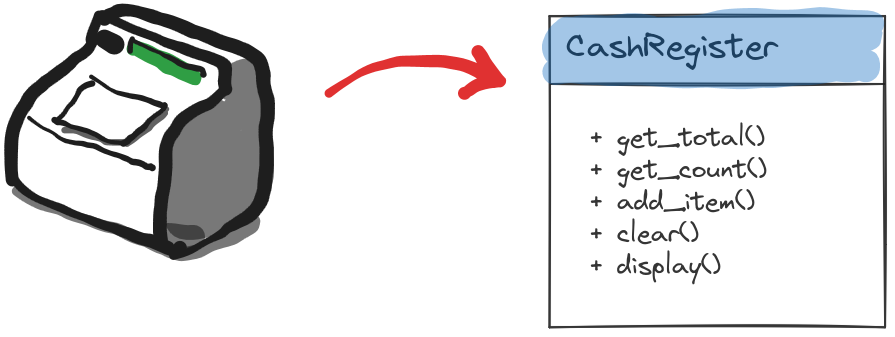
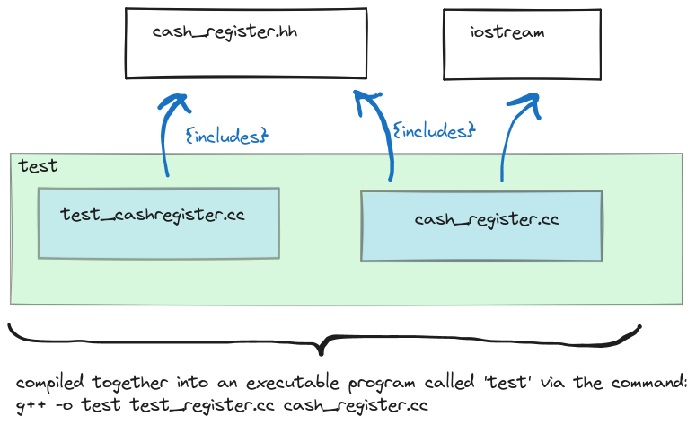
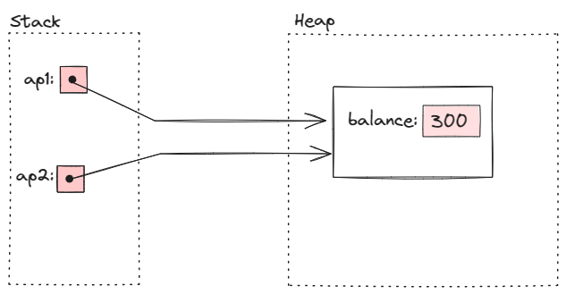
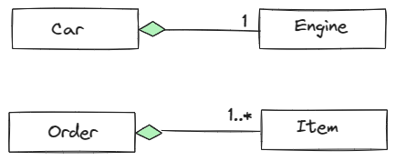
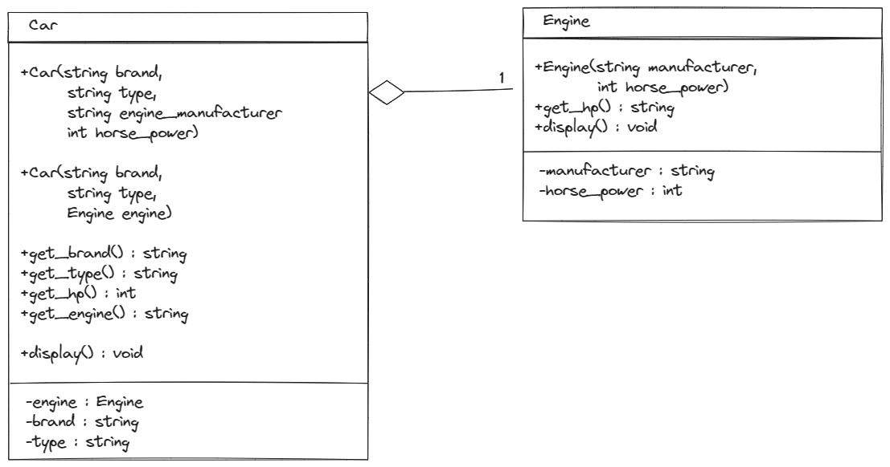
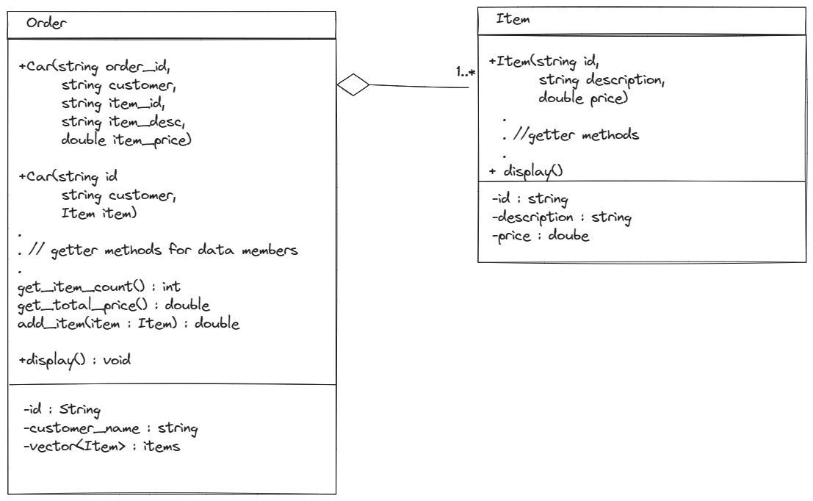

7 Object Orientated Programming in C++
7.1 Introduction
Combine data and functions as a unit. Components of a class are called members. In OOP parlance functions members are called methods
- methods: behaviour of the object
- data members: state state of the object
Concrete objects created from a class that exist during life-time are called instances.
Classes are like new data types, and instance objects are declared just like variables of fundamental types would.
Example
class Account
{
public:
double get_balance() const;
double withdraw(double amount);
private :
double balance = 100; //initialize with default 100
};
Account::get_balance(){return balance;}
Account::withdraw(doulbe amount){balance -= amount;}
Account a1;
a1.withdraw(25);The keyword const in double get_balance() const denotes that get_balance() doesn’t modify the state of the object \(\Rightarrow\) accessor method.
- accessor methods: methods that do not modify the state of the object like
get_balance(). They should be denoted by theconstkeyword as above. - mutator methods: methods that modify the state of the object like
withdraw().
7.2 Encapsulation
- public members of the class is the interface provided for the user of the class.
- private members of the class are used to implement the public interface.
This separation is called encapulsation and information hiding. This facilitates changing the implementation without changing the interface or affecting other programs that use this class.
Usually an improvement of an existing code comes through changing the underlying data structures. If internal representation if kept hidden from the user of the class, than this change will not effect the user.
It is good practice to list public members before private ones, since users reading the class are primarily interested in the interface as opposed to implementation details.
To adhere to the principle of information hiding data members should be always kept private. Accessing or mutating the data members should be provided through a public interface of accessor and mutator member functions, and never directly.
7.3 Separate Compilation
Encapsulation and information hiding nicely leads to the concept of modularization and separate compilation. When interface definitions and implementations of a class are separated in distinct source files, only the files that are modified can be recompiled, other files need not to be.
Consider the situation we want to simulate a cash register machine, with a class that provides the following interface:

We provide the interface for the class ’CashRegister’in a header file:
cash_register.hh
#ifndef CASHR_H
#define CASHR_H
class CashRegister
{
public:
CashRegister();
double get_total() const;
int get_count() const;
void clear();
void add_item(double amount);
void display() const;
private:
int item_count;
double price_total;
};
#endif // !CASHR_hNote the
#ifdef CASHR_H
#define CASHR_H
//... contents of the header file
#endif //CASHR_Hconstruct. This is called a header guard. It is possible that in a project there are many files that use the CashRegister class. When multiple such files are included in another file, the problem will arise that header definitions of CashRegister are included multiple times. As multiple definitions are not legal, this would cause a compiler error. Header guard ensures this, and always should be used.
The implementation of this interface definition is provided separately in a .cpp file:
cash_register.cc
#include "cash_register.hh"
#include <iostream>
CashRegister::CashRegister()
{
item_count = 0;
price_total = 0;
}
int CashRegister::get_count() const {return item_count;}
double CashRegister::get_total() const {return price_total;}
void CashRegister::display() const {
std::cout << "count: " << get_count() << std::endl
<< "sum: " << get_total() << std::endl;
}
void CashRegister::clear()
{
item_count = 0;
price_total = 0;
}
void CashRegister::add_item(double amount)
{
item_count++;
price_total += amount;
}Note that other additional headers needed for the implementation like `
Finally we create test program called test_cashregister.cc with a main() function, that will utilize and test the CashRegister class:
test_cashregister.cc
#include "cash_register.hh"
#include <iostream>
void display_n(CashRegister cr)
{
cr.display();
std::cout << std::endl;
}
int main(int argc, char const *argv[])
{
CashRegister cr1;
display_n(cr1);
cr1.add_item(15.4);
display_n(cr1);
cr1.clear();
display_n(cr1);
return 0;
}Note that test_cashregister.cc only has the interface to CashRegister via the header cash_register.hh but not the actual implementation. This is well intented, since we want to provide the implementation to the compiler as follows:
g++ -o test_cashregister test_cashregister.cc cash_register.ccHow headers are interrelated and compiled together into an executable can be visualised as follows:

The important advantage here is that if the implementation of CashRegister changes, this is reflected solely in cash_register.cc. Thus during recompilation, this file alone needs to be recompiled and linked against test_cashregister.cc. For large software projects and collaborative programming this modularization is essential.
7.4 Constructors & Destructors
Constructors
- Constructor method is called after an object is initialized/created in memory.
- It can defined manually by the programmer, otherwise a default constructor always exists. In case of manual definition it can have a list of arguments, just like any other method.
- When a constuctor is defined manually, the default constructor (one without any arguments must be redefined explicitly by the programmer) \(\Rightarrow\) overloading.
- For class
Aits constructor is calledA(). (Same name as its class) - Has no return value, but doesn’t use keyword
void
Destructors
- The method called before the memory occupied by the object is freed.
- It can be defined by the programmer, otherwise default destructor is created.
- Destructor for class
Ais called~A() - Destructors have no arguments, no return value, do not use
void.
Example:
class Account
{
public :
Account(double amount);
Account(); //default constructor must be now explicitly defined
~Account();
... //rest of class
};
// ... rest of implementations
// initializes account with initial balance of amount
Account::Account(double amount) {balance = amount;}
// overloaded constructors defininig default constructor, which
// initializes account to a default value of 100
Account::Account() {balance = 100;} Then
Account a1;
std::cout << a1.get_balance() << std::endl;
a1.withdraw(100);
std::cout << a1.get_balance() << std::endl;
Account a2(500);
std::cout << a2.get_balance() << std::endl;
a2.withdraw(100);
std::cout << a2.get_balance() << std::endl;prints out
100
0
500
4007.5 Pointers / References to Objects
Pointers or references can provide shared access to objects. Assume that a bank account is shared by two people. With pointers:
//ap1 points to an account object on heap
Account *ap1 = new Account(300);
//ap2 points to the same object
Account *ap2 = ap1;Visually this looks like:

We can access this objects methods via its pointer:
(*ap1).withdraw();Equivalent, and a more common way:
ap1->withdraw(10);Which can be understood as: “follow the pointer ap1 to the object it follows and access the method”.
The changes will be reflected of course via the pointer ap2:
ap1->get_balance()
ap2->get_balance()
//both return the same value of 290Same can be achieved with references:
Account a(20);
Account &b = a;
//both return 20
a.get_balance();
b.get_balance();
//withdraw 5 from a
a.withdraw(5);
/*changes reflected in both,
both return 15: */
a.get_balance()
b.get_balance()7.6 Composition / Aggregation
In real world objects are usually composed of other objects/components. A car has chasis, tires, engine etc. In oop this is called composition or aggregation.
The compisition is classified based on the arity of objects that are aggregated and the nature of the association.
The nature of association is divided into two classes:
- strong association/strict aggregation.
- weak association.
First we consider strong association/strict aggregation
Strict Aggregation
In strict aggregation an object is concretely made up of its component objects, and its integrity and lifetime depends on them. A car is strictly composed of four tires and can not exist without the tires.
Strict aggregation itself is categorized depending on the number of objects aggregated:
- Fixed number composition: A car has exactly four tires, or exactly one engine.
- Arbitrary number composition: An order consists of at least one and at most arbitary number of items.
In UML notation:

Fixed Number Aggregation
We first consider the car-engine situation, where a car is composed exactly of one engine. (We ignore all other components that might make up a car for the sake of brevity).
The interface is illustrated in the following UML diagram:

Note that we provide two overloaded constructors: one that receives data members that need to initialize engine component as parameters, and another that receives and engine object as parameter and copies those engines data attributes to the corresponding data attributes in the car object.
c++ implementation with Engine engine data member:
- the interface:
car.hh
#ifndef CAR_H
#define CAR_H
#include <string>
class Engine
{
public:
Engine(std::string manufacturer, int horse_power);
int get_hp();
std::string get_brand();
void display();
private:
std::string manufacturer;
int horse_power;
};
class Car
{
public:
Car(std::string brand,
std::string type,
std::string engine_manufacturer,
int horse_power);
Car(std::string brand,
std::string type,
Engine engine);
std::string get_brand();
std::string get_type();
int get_hp();
std::string get_engine();
void display();
private:
Engine engine;
std::string brand;
std::string type;
};
#endif // !CAR_H- The implementatin of the classes:
car.cc
#include "car.hh"
#include <iostream>
Engine::Engine(std::string _brand, int _hp) :
manufacturer(_brand),
horse_power(_hp) {}
std::string Engine::get_brand() {return manufacturer;}
int Engine::get_hp() {return horse_power;}
void Engine::display()
{
std::cout << "manufacturer: " << get_brand() << std::endl
<< "horse power: " << get_hp() << std::endl;
}
Car::Car(std::string _brand,
std::string _type,
std::string engine_manufacturer,
int hp) :
brand(_brand),
type(_type),
engine(engine_manufacturer,
hp) {}
Car::Car(std::string _brand,
std::string _type,
Engine _engine) :
brand(_brand),
type(_type),
engine(_engine) {};
std::string Car::get_brand(){return brand;}
std::string Car::get_type() {return type;}
std::string Car::get_engine() {return engine.get_brand();}
int Car::get_hp() {return engine.get_hp();}
void Car::display()
{
std::cout << "brand: " << get_brand() << std::endl
<< "type: " << get_type() << std::endl
<< " engine: " << std::endl;
engine.display();
}- we test these classes:
test_car.cc
#include "car.hh"
#include <iostream>
int main(int argc, char const *argv[])
{
Car c1("Audi", "sport", "Volkswagen", 220);
c1.display();
std::cout << std::endl;
Engine e("Toyota", 135);
Car c2("Honda", "family", e);
c2.display();
std::cout << std::endl;
return 0;
}output:
brand: Audi
type: sport
engine:
manufacturer: Volkswagen
horse power: 220
brand: Honda
type: family
engine:
manufacturer: Toyota
horse power: 135- We used
Enginedisplay()function in the implementation ofCar‘sdisplay()function. Thus utilizing ’code-reuse’ principle of OOP in the context of aggregation. - We created two car objects, once with each of the overloaded constructors. Second constructor used an existing engine object to copy the data members of that engine to the corresponding data members in the car object.
Arbitrary Number Aggregation
Now consider the second case where an order has at least one item, but can have arbitrary many items.
This situation is demonstrated with the following UML diagram:

Note the overloaded constructors for Order.
The c++ implementation with std::vector<Item> items data member:
- the interface:
order.hh
#ifndef ORDR_H
#define ORDR_H
#include <string>
#include <vector>
class Item
{
public:
Item(std::string id,
std::string description,
double price);
std::string get_id();
std::string get_description();
double get_price();
void display();
private:
std::string id;
std::string description;
double price;
};
class Order
{
public:
Order(std::string order_id,
std::string customer_name,
std::string item_id,
std::string item_desc,
double item_price);
Order(std::string id,
std::string customer_name,
Item item);
std::string get_order_id();
std::string get_customer_name();
double get_total_price() const;
int get_item_count() const;
void add_item(Item item);
void display() const;
private:
std::string id;
std::string customer_name;
std::vector<Item> items;
};
#endif // !ORDR_H- the implementation:
order.cc
#include "order.hh"
#include <iostream>
Item::Item(std::string _id,
std::string _desc,
double _price) :
id(_id),
description(_desc),
price(_price) {}
std::string Item::get_id() {return id;}
std::string Item::get_description() {return description;}
double Item::get_price() {return price;}
void Item::display()
{
std::cout << "id: " << id << std::endl
<< "description: " << description << std::endl
<< "price: " << price << std::endl;
}
Order::Order(std::string order_id,
std::string _customer_name,
std::string item_id,
std::string item_desc,
double item_price) :
id(order_id),
customer_name(_customer_name)
{
items.push_back({item_id, item_desc, item_price});
}
Order::Order(std::string _id,
std::string _customer_name,
Item item) :
id(_id),
customer_name(_customer_name)
{
items.push_back(item);
}
std::string Order::get_order_id() {return id;}
std::string Order::get_customer_name() {return customer_name;}
double Order::get_total_price() const
{
double sum = 0;
for (auto it : items) {
sum += it.get_price();
}
return sum;
}
int Order::get_item_count() const
{
return items.size();
}
void Order::add_item(Item item)
{
items.push_back(item);
}
void Order::display() const
{
std::cout << "order id: " << id << std::endl
<< "customer name: " << customer_name << std::endl
<< " Items: " << std::endl << std::endl;
for (auto it : items) {
it.display();
std::cout << std::endl;
}
std::cout << "item count: " << get_item_count() << std::endl;
std::cout << "total price: " << get_total_price() << std::endl;
}- testing:
test_order.cc
#include "order.hh"
#include <iostream>
int main(int argc, char const *argv[])
{
Order o1(
"1",
"bob",
"123",
"water",
0.95
);
o1.display();
Item i1(
"2",
"bread",
1.25
);
o1.add_item(i1);
std::cout << std::endl;
o1.display();
Item i2(
"3",
"cola",
2.5
);
Order o2(
"3",
"alice",
i2
);
std::cout << std::endl;
o2.display();
std::cout << std::endl;
i1.display();
}Finally we compile the test with the command
g++ -o test_order test_order.cc order.ccto obtain the output:
order id: 1
customer name: bob
Items:
id: 123
description: water
price: 0.95
item count: 1
total price: 0.95
order id: 1
customer name: bob
Items:
id: 123
description: water
price: 0.95
id: 2
description: bread
price: 1.25
item count: 2
total price: 2.2
order id: 3
customer name: alice
Items:
id: 3
description: cola
price: 2.5
item count: 1
total price: 2.5
id: 2
description: bread
price: 1.25We created two orders, demonstrating each one of the overloaded constructors, by passing an existing item object to the second order objects constructor as argument.
We demonstrated the display() function both of the Order and of Item objects.
Note that as before, display() function from Order class utilizes code-reuse by using display() from the Item object it aggregates.
The central notion of this chapter is arbitrary number aggregation. An order may have an arbitrary number of items. In c++ it is very common to realize such a relationship with the std::vector<> class. We defined an std::vector<Item> items attribute as a data member of the Order class. Then items simply aggregates Item objects during the lifetime of a given Order object. Since a c++ vector is a dynamic array and therefore can grow arbitrarily, this suitable reflects our sitation.
The constraint that an order must have at least on item is realized by our constructors: there is no defualt constructor, the constructors that we defined initialize an Order object with one Item object. Thus when an ordes is created, it always has one item. Afterwards new items may be added with the add_item() method
To implement arbitrary number aggregation use std::vector<> as a data member. E.g. if A aggregates arbitrary number of B s use std::vector<B> collection_of_Bs as a data member of A
Weak Association
…